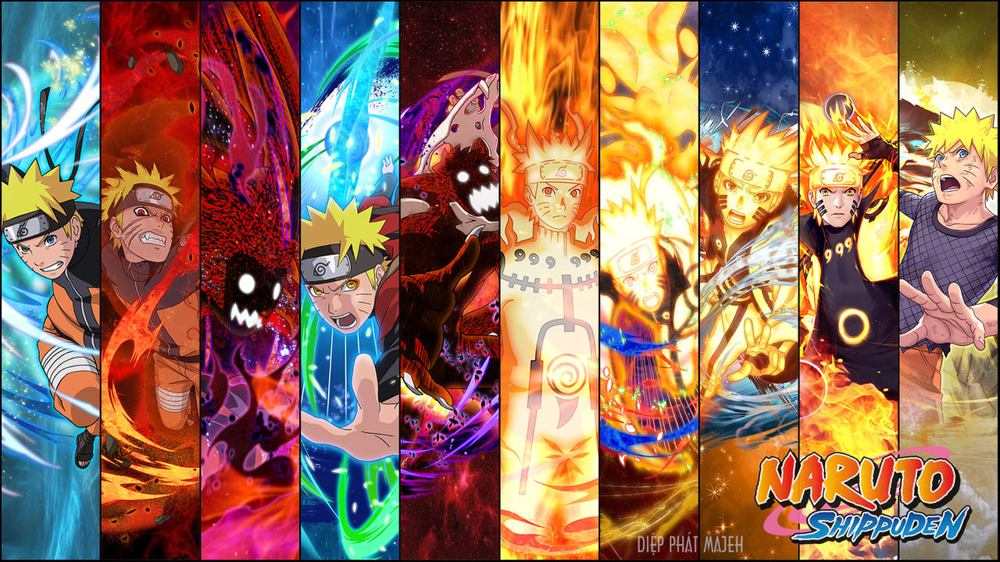

naruto
Naruto is a Japanese anime and manga series that follows the story of Naruto Uzumaki, a young ninja with dreams of becoming the strongest ninja in his village, known as the Hokage. The series explores his journey of growth, friendship, and self-discovery while he faces various challenges, including powerful enemies and personal struggles. Along the way, Naruto also learns about the importance of teamwork, perseverance, and the bonds he forms with others.